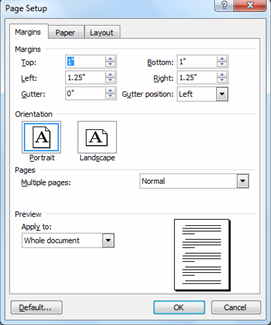
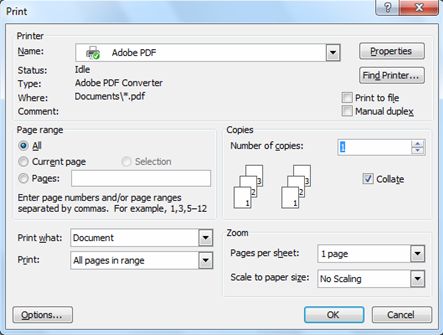

عادةً ما تتم معالجة معظم إعدادات الطباعة تلقائيًا من قبل التطبيق الذي تطبع منه. قد تحتاج إلى تغيير هذه الإعدادات يدويًا فقط عندما تريد تغيير جودة الطباعة، أو الطباعة على نوع معين من الورق أو شرائح العرض، أو استخدام ميزات خاصة أخرى.

